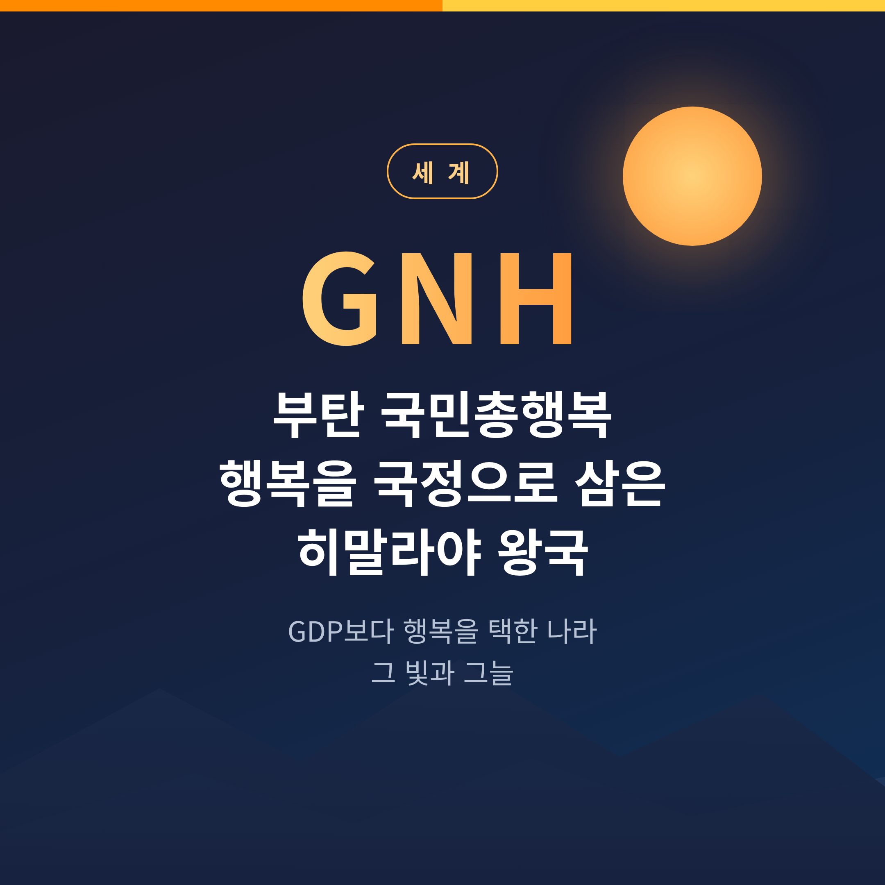
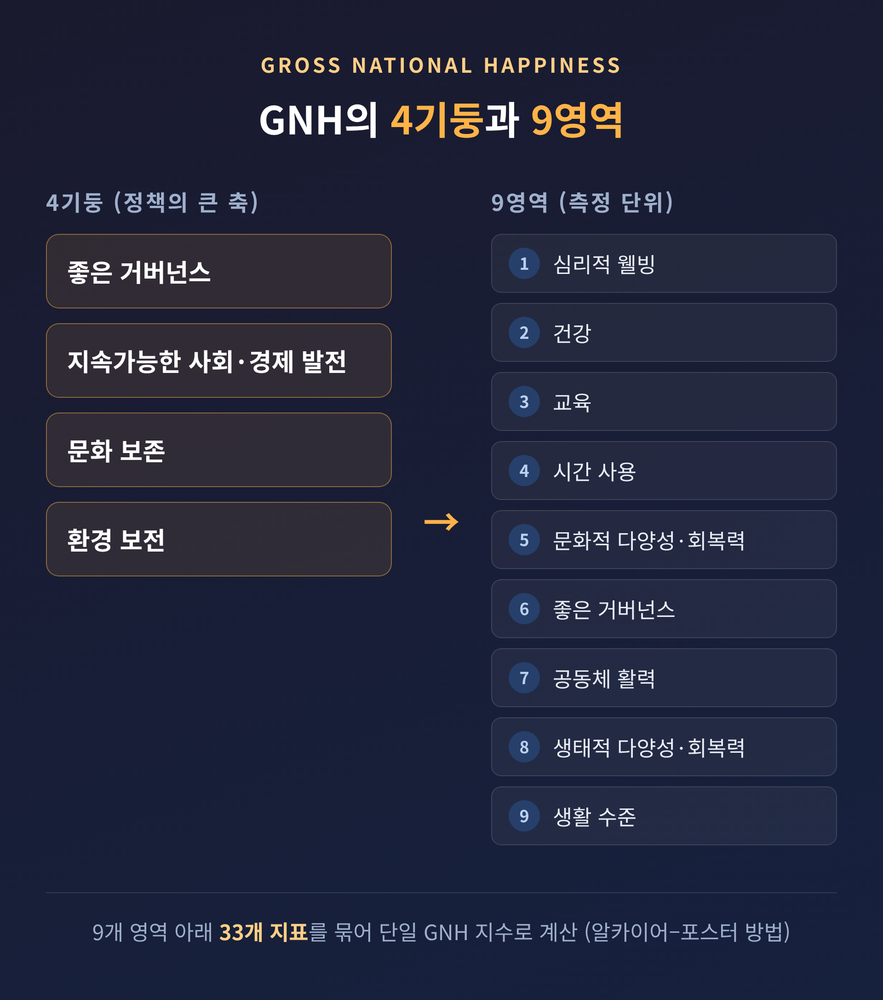
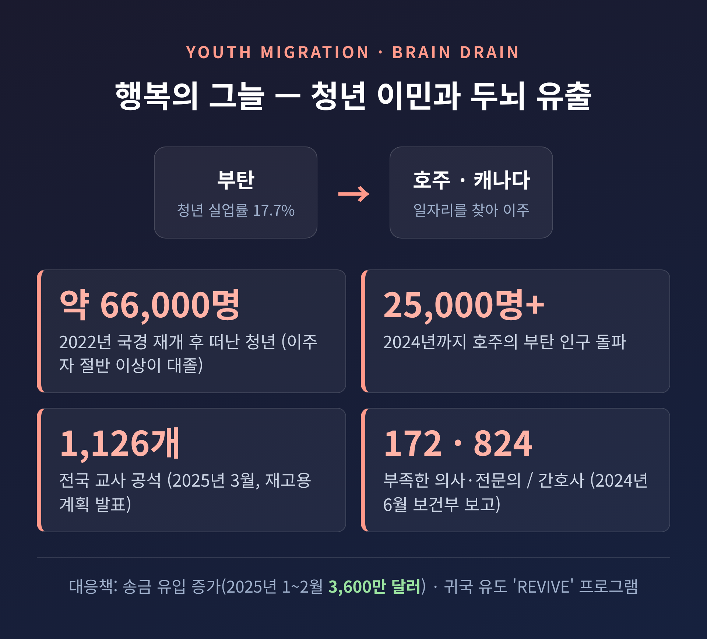

[세계] 부탄 국민총행복(GNH), 행복을 국정으로 삼은 히말라야 왕국 — 빛과 그늘

오늘은 부탄의 국민총행복(GNH)을 이야기해 보려 합니다.
GDP 대신 행복을 국정 철학으로 내건 나라입니다.
이상은 분명히 높습니다. 그러나 그늘도 함께 깊습니다.
먼저 결론부터 말씀드립니다.
부탄은 "GDP보다 행복"이라는 선언을 제도로 옮긴 드문 나라입니다.
탄소 네거티브라는 성취도 이뤘습니다.
다만 청년의 대규모 이민과 과거 인권 문제라는 한계가 분명히 남아 있습니다.
히말라야 사이의 작은 왕국
부탄은 히말라야 동부에 있습니다.
중국(티베트)과 인도 사이에 낀 내륙 산악국입니다.
인구는 약 80만 명. 험준한 산지가 오래도록 외부 접촉을 막아 왔습니다.
덕분에 독자적 문화가 살아남았습니다.
왕정의 출발은 1907년입니다.
그해 12월 17일 왕축(Wangchuck) 가문이 나라를 통일했습니다.
이 왕조는 지금까지 부탄을 이끌고 있습니다.
흥미로운 점은 민주화의 방향입니다.
혁명이나 외압이 아니라 왕실이 스스로 권력을 내려놓았습니다.
4대 국왕은 1998년 절대권력의 일부를 내려놓았습니다.
2006년에는 아들인 5대 국왕에게 양위했습니다.
2008년 7월 18일 헌법이 공포되며 입헌군주제 의회민주주의 국가가 됩니다.
위에서 아래로 내려준 민주주의인 셈입니다.
"GDP보다 행복" — GNH의 4기둥과 9영역
국민총행복(GNH)의 뿌리는 1970년대로 거슬러 올라갑니다.
4대 국왕이 "국민총행복이 국내총생산(GDP)보다 더 중요하다"고 선언한 것이 출발점으로 인용됩니다.
이후 이 철학은 부탄의 개발 정책 전반에 스며들었습니다.
GNH는 흔히 네 개의 기둥으로 설명됩니다.
이를 다시 아홉 개 영역으로 나눠 측정합니다.

4기둥은 다음과 같습니다.
- 좋은 거버넌스
- 지속가능한 사회·경제 발전
- 문화 보존
- 환경 보전
9영역은 더 촘촘합니다.
심리적 웰빙, 건강, 교육, 시간 사용, 문화적 다양성·회복력, 좋은 거버넌스, 공동체 활력, 생태적 다양성·회복력, 생활 수준입니다.
측정도 막연하지 않습니다.
GNH 지수는 9개 영역 아래 33개 지표를 묶은 단일 숫자입니다.
'알카이어-포스터' 방법이라는 다차원 방법론으로 계산합니다.
행복을 구호가 아니라 숫자로 다루려는 시도라 하겠습니다.
선언에서 제도로 — 행복을 정책에 새기다
부탄이 특별한 이유는 선언에 그치지 않았다는 데 있습니다.
2008년 기존 기획위원회를 '국민총행복위원회(GNHC)'로 개편했습니다.
GNH를 정책에 녹여 넣고 실행을 조율하는 기구입니다.
같은 해 'GNH 정책 심사 도구'도 마련했습니다.
새 정책이 GNH 지표와 얼마나 맞는지 사전에 따져 보는 틀입니다.
즉, 정책 하나하나가 행복 기준의 심사를 거칩니다.
일부 가치는 아예 헌법에 못 박았습니다. 정권이 바뀌어도 흔들리지 않게 설계한 것입니다.
가장 최근의 실험은 '겔레푸 마인드풀니스 시티(GMC)'입니다.
2024년 12월 왕실 헌장으로 세운 고도 자치의 특별행정구역입니다.
면적은 2,600km² 이상으로 국토의 약 5%에 해당합니다.
전통적 가치와 혁신·기술을 한데 묶으려는 도시 단위 시도입니다.
덴마크 건축가 비야케 잉겔스(BIG)가 설계에 참여해 국제적 주목을 받았습니다.
탄소 네거티브와 문화 보존 — 밝은 면
부탄을 세계에 알린 또 하나의 성취가 있습니다.
배출하는 양보다 더 많은 탄소를 흡수하는 '탄소 네거티브' 국가라는 점입니다.
수치로 보면 분명합니다.
2020년 기준 부탄의 숲은 매년 약 900만 톤의 탄소를 흡수합니다.
반면 경제활동에서 나오는 배출은 약 200만 톤에 그칩니다.
이 균형은 우연이 아닙니다.
헌법은 산림 비율을 '영구히 60% 이상' 유지하도록 명시합니다.
실제 산림 비율은 자료에 따라 약 72%에서 81%에 이릅니다. 헌법 기준을 넉넉히 넘습니다.
수력발전을 앞세우고 수출용 벌목을 금지한 정책이 이를 뒷받침했습니다.
문화 보존도 4기둥의 하나입니다.
전통 의상, 건축, 언어, 불교 신앙이 국가 정책으로 지켜집니다.
다만 이 '보존 서사'에 한계가 있다는 비판적 시선도 함께 존재합니다.
행복의 그늘 — 청년 이민과 두뇌 유출
밝은 면만 보면 절반만 본 것입니다.
부탄의 가장 무거운 고민은 청년에게 있습니다.
청년 실업률은 약 17.7%로 높습니다.
민간 부문이 숙련 졸업자를 흡수하지 못한다는 지적이 따라붙습니다.
2022년 국경 재개 이후 해외 이주가 급증했습니다.
약 66,000명의 청년이 일자리를 찾아 나라를 떠났다는 보도가 있습니다.
일부 매체는 이를 '실존적 위기'라고까지 표현합니다.
문제는 떠나는 사람들의 면면입니다.
이주자의 절반 이상이 대학 학위 소지자입니다.
부탄 전체 노동연령 인구 중 대졸은 7%에 불과한데도 그렇습니다.
거의 절반은 공무원 출신, 특히 교사와 보건 인력입니다.

공백은 곧바로 드러났습니다.
2025년 3월 교육부는 전국 1,126개 교사 공석을 메우려 재고용 계획을 내놨습니다.
2024년 6월 보건부는 의사·전문의 172명, 간호사 824명 부족을 의회에 보고했습니다.
2024년까지 호주의 부탄 인구는 25,000명을 넘어섰습니다.
물론 양면은 있습니다.
해외에서 보내오는 송금은 빠르게 늘었습니다.
2025년 첫 두 달간 부탄이 받은 송금은 3,600만 달러에 이릅니다.
정부는 귀국을 유도하는 '국가 재통합 프로그램(REVIVE)'도 시작했습니다.
잊지 말아야 할 과거 — 로트샴파 난민
행복의 나라라는 수식 뒤에는 어두운 역사도 있습니다.
1980~1990년대 부탄 정부가 남부의 네팔계 주민인 로트샴파 10만 명 이상을 억압하고 강제 추방했다는 책임 문제가 제기되어 왔습니다.
이들은 1990년대 네팔 동부의 난민 캠프에 등록되었습니다.
2008년부터는 미국이 약 85,000명을 재정착시켰습니다.
행복 서사를 평가할 때, 이 역사는 반드시 함께 봐야 합니다.
빛이 밝을수록 그늘도 함께 기억해야 한다고 생각합니다.
GNH 지수와 세계행복보고서는 다르다
마지막으로 흔한 오해 하나를 짚겠습니다.
부탄 자체의 GNH 지수와 유엔·갤럽의 세계행복보고서(WHR)는 서로 다른 지표입니다.
부탄의 GNH 지수는 2022년 기준 0.781입니다.
2010년 0.743에서 꾸준히 오른 수치입니다.
'깊이 행복'과 '폭넓게 행복'의 합은 2010년 40.9%에서 2022년 48.1%로 늘었습니다.
반면 세계행복보고서에는 사정이 다릅니다.
갤럽이 부탄에서 여론조사를 하지 않아, 최근 보고서에 부탄은 사실상 빠져 있습니다.
간혹 '95위' 같은 옛 수치가 인용되지만, 최근 순위로 보기는 어렵습니다.
참고로 가장 최근판에서도 핀란드가 9년 연속 1위(7.764점)를 지켰습니다.
행복을 숫자로 잡는 일 자체가 어렵다는 비판도 있습니다.
그래도 부탄은 그 어려운 일을 정면으로 시도해 온 나라입니다.
끝으로 한 마디만 더 드리겠습니다.
부탄의 실험은 완성형이 아닙니다. 청년은 떠나고, 과거의 짐은 남아 있습니다.
그럼에도 한 가지는 분명합니다.
— "무엇을 위해 성장하는가"라는 질문을 국정에 새긴 나라가 있다는 것.
부탄이 끝내 답을 찾을지 묻는다면, 아직은 지켜보는 중이라고 답하겠습니다.